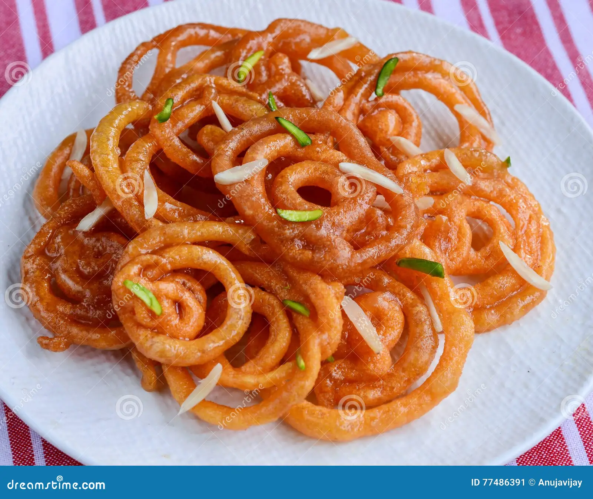

History & Story
Prem Mandir, meaning “Temple of Divine Love,” was established by Jagadguru Shri Kripalu Ji Maharaj and inaugurated in 2012. The temple is made entirely of white marble and intricately carved with scenes from Lord Krishna’s life, including his childhood pastimes and the Ras Leela with Radha. It symbolizes universal love and devotion to Krishna, attracting devotees from across India and the world.
Why Visit
- Marvel at the intricate marble carvings depicting Krishna’s divine pastimes.
- Witness the temple illuminated at night with thousands of lights—an enchanting experience.
- Experience the spiritual atmosphere in one of the most beautifully designed Krishna temples in India.
- Ideal for devotees, families, and photography enthusiasts alike.
Popular Food

Gujiyas

Gilebi

Malai Lassi
Visitor Experience
- The temple is illuminated with thousands of lights at night, creating a magical atmosphere while narrating Krishna’s pastimes through sound and music.
- Visitors can admire the intricate white marble carvings that depict Krishna’s childhood, Ras Leela, and divine stories on the walls, ceilings, and pillars.
- Many devotees participate in aarti and bhajans, meditate in the serene surroundings, and enjoy a sense of devotion and calm that’s unique to Prem Mandir.
Location
Prem Mandir, Vrindavan, Mathura, Uttar Pradesh, India
Easily accessible from Mathura Junction railway station (approx. 12 km)